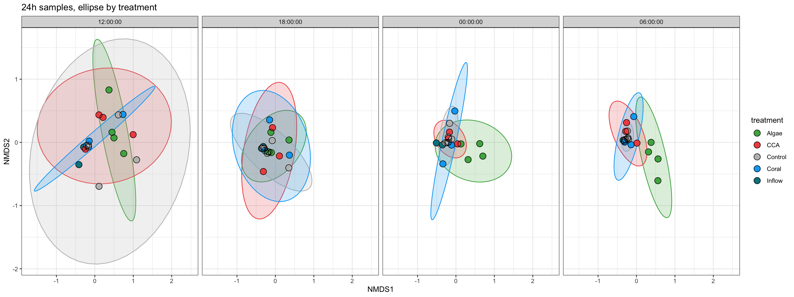
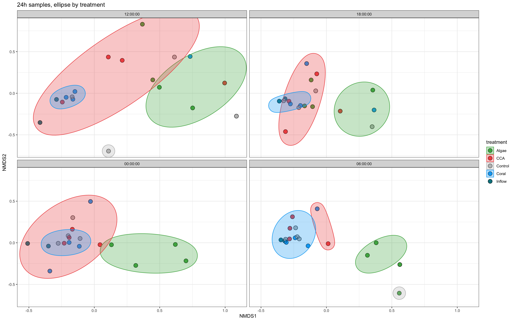
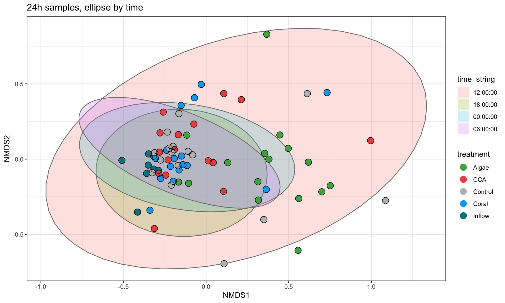
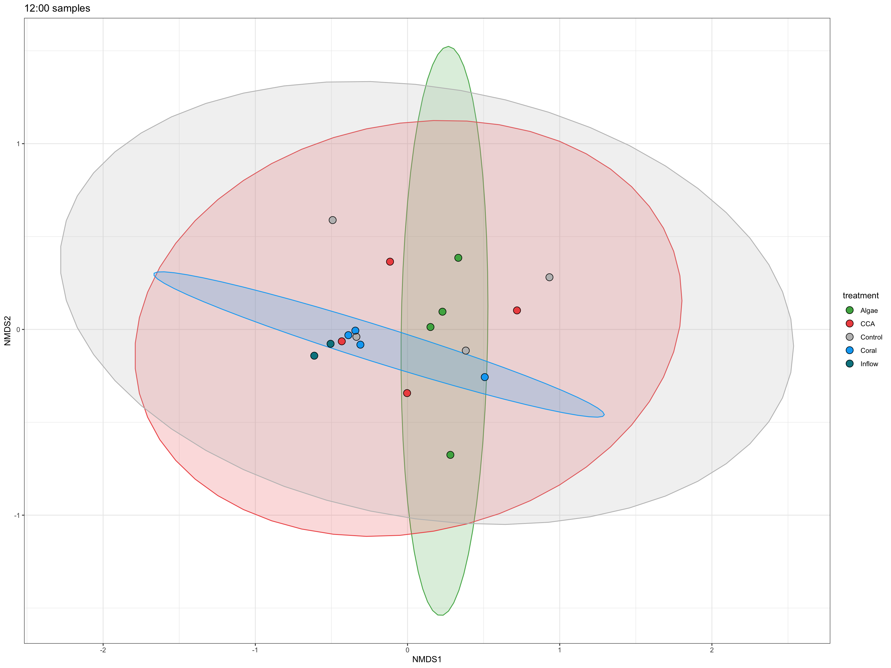
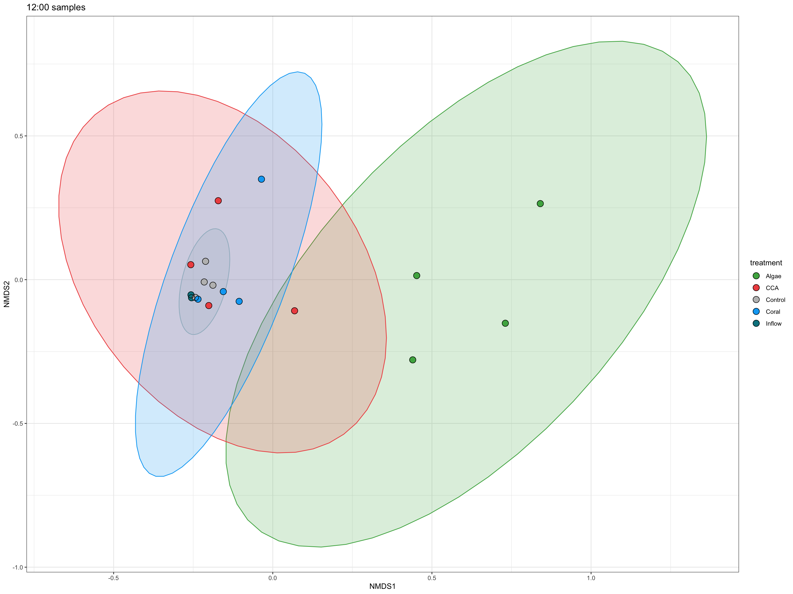

library(tidyverse)
#library(lubridate)
library(here)
library(janitor)
#library(ggrepel)
#library(ghibli)
#library(gt)
library(patchwork)
#library(RColorBrewer)
library(vegan)
library(phyloseq)
#library(GUniFrac)MOBEAST- DNA Ordination 24h
Load Libraries
Data visualization
treatment_colors = c("Inflow"="#00838F",
"Control"="grey",
"Coral"="#03A9F4",
"CCA"="#EF5350",
"Algae"="#4CAF50",
"Endmember" = "black",
"Rain"= "yellow")nunu_theme <- theme_bw() +
theme(plot.title = element_text(size=32, face = "bold"),
plot.subtitle = element_text(size=30),
axis.title = element_text(size = 28, face = "bold"),
axis.text = element_text(size = 28),
strip.text.x = element_text(size = 28, face = "bold"),
legend.title=element_text(size=28, face = "bold"),
legend.text=element_text(size=28))Load Data
otu <- read_csv(here("data", "DNA", "MOBEAST_OTU_culled.csv"))
meta <- read_csv(here("data","MOBEAST_metadata_V2.csv"))
#tax <- read_csv(here("data","DNA", "MOBEAST_tax_culled.csv"))
OTU_ord <- read_csv(here("data","OTU_heatmap_ready.csv"))
cluster <- read_csv(here("data","DNA", "24h_clusters.csv"))Data Clean Up
```{, meta data clean up} meta<- meta %>% mutate(time = str_pad(time, width = 4, side = “left”, pad = “0”), time = str_replace(time, “(\d{2})(\d{2})”, “\1:\2”)) %>% # “(\d{2})(\d{2})” separates the string in 2 groups of 2 characters # “\1:\2”, group1 + “:” + group2 mutate(time = paste0(time, “:00”), date_time = paste(date, time), date = mdy(date), date_time = mdy_hms(date_time), time = factor(time))
## Preparing the metadata to annotate the heatmap
```{}
# renaming some of treatment so that environmental data have a label: endmember or rain
# Same for inflow table, environmental samples now have a label
## Convert tibble to df for later
meta <- meta %>% mutate(treatment = as.character(treatment)) %>%
mutate(treatment = ifelse(id_number == "MOBEAST115", "Rain",
ifelse(is.na(treatment), "Endmember", treatment))) %>%
mutate(inflow_table = ifelse(is.na(inflow_table), "Environmental data", inflow_table)) %>%
mutate(date_string = as.character(date),
time_string = as.character(time),
date_time_string = paste(date_string, time_string)) %>%
as.data.frame()cluster<- cluster %>%
#mutate(cluster = factor(cluster)) %>%
mutate(cluster2 = ifelse(cluster == 1, "Algae",
ifelse(cluster == 2, "CCA",
ifelse(cluster == 3, "Coral", "Control")))) %>%
select(-cluster) %>%
rename(cluster = cluster2)
meta<- meta %>% left_join(cluster)Transform the dataframes into matrices
## Make an OTU matrix
otu<- otu %>% mutate(ASV = toupper(ASV))
otu_list<- otu$ASV
otu<- otu %>% select(-(117:122), -MOBEAST017b)
otu_mat <- as.matrix(otu)
rownames(otu_mat) <- otu_listOTU <- otu_table(otu_mat, taxa_are_rows = TRUE)Ordinations with long format df
24h Samples
otu_ord <- OTU %>%
t() %>%
as.data.frame()
# Make the sample ID the rownames of the data frame
otu_ord<- otu_ord %>% mutate(id_number = rownames(otu_ord))
# only select 12PM samples
id_number_24h <- meta %>%
filter(date_string == "2024-06-02"| date_string == "2024-06-03") %>%
pull(id_number)
otu_ord_24h <- otu_ord %>% filter(id_number %in% id_number_24h)# only keep the OTU numbers in the matrix and remove the id_number column
## ID numbers are now rownames. then convert the df in a matrix.
otu_ord_mat_24h <- otu_ord_24h %>% select(-id_number) %>% as.matrix()Calculate distances
# metaMDS uses a random number to calculate the distance matrix. Need to set a "seed" to get the consistent results.
set.seed(2000)
# calcultat the distance matrix with bray-curtis method
MOBEAST_dist_24h <- vegdist(otu_ord_mat_24h, method = "bray")#calculate the MDS scores such that it converges to a solutions.
## trymax was randomly set to 10000 (based on the internet), because solutions did not converge on the initial trials.
nmds <- metaMDS(MOBEAST_dist_24h, trymax = 10000)Run 0 stress 0.131537
Run 1 stress 0.131537
... Procrustes: rmse 9.792944e-06 max resid 7.574888e-05
... Similar to previous best
Run 2 stress 0.1799284
Run 3 stress 0.1625864
Run 4 stress 0.1667198
Run 5 stress 0.1511703
Run 6 stress 0.1315367
... New best solution
... Procrustes: rmse 0.0001106957 max resid 0.0008931215
... Similar to previous best
Run 7 stress 0.1476123
Run 8 stress 0.172846
Run 9 stress 0.1693923
Run 10 stress 0.1633366
Run 11 stress 0.1494368
Run 12 stress 0.1761157
Run 13 stress 0.1491328
Run 14 stress 0.1378343
Run 15 stress 0.1724142
Run 16 stress 0.1711017
Run 17 stress 0.1749641
Run 18 stress 0.1714359
Run 19 stress 0.138874
Run 20 stress 0.1737835
*** Best solution repeated 1 times# save the NMDS scores in a tibble with the ID numbers.
MOBEAST_nmds_24h <- scores(nmds) %>% as_tibble(rownames = "id_number")# add the metadata to the NMDS tibble to make plots
MOBEAST_nmds_24h <- left_join(MOBEAST_nmds_24h, meta)Plotting NDMS 24h
Plotting by treatment
# Plot
MOBEAST_nmds_24h %>%
mutate(time_string = factor(time_string, levels = c("12:00:00", "18:00:00",
"00:00:00", "06:00:00"))) %>%
ggplot(aes(x= NMDS1, y = NMDS2, colour = treatment, fill= treatment))+
stat_ellipse(#aes(colour = cluster, fill = cluster),
alpha = 0.2, geom= "polygon", level = 0.95, show.legend = FALSE)+
geom_point(size = 4) +
geom_point(shape = 1, color = "black",size = 4) +
#geom_label_repel(aes(label = date_string))+
facet_wrap(~time_string, ncol = 4)+
labs(title= "24h samples, ellipse by treatment")+
scale_color_manual(values=treatment_colors)+
scale_fill_manual(values=treatment_colors) +
#nunu_theme+
theme_bw()
#ggsave("24h_treatment.png", width = 16, height = 10, path = here("outputs", "DNA"))Plotting by heatmap cluster
Note: cluster numbers are inaccurate and do not match what is seen in the heatmap. Problem with the distance matrix or clutering method or both…
# Plot
MOBEAST_nmds_24h %>%
mutate(time_string = factor(time_string, levels = c("12:00:00", "18:00:00",
"00:00:00", "06:00:00"))) %>%
ggplot(aes(x= NMDS1, y = NMDS2, colour = treatment, fill= treatment))+
#stat_ellipse(aes(colour = cluster, fill = cluster),
#alpha = 0.2, geom= "polygon", level = 0.95, show.legend = FALSE)+
geom_point(size = 4) +
geom_point(shape = 1, color = "black",size = 4) +
#geom_label_repel(aes(label = date_string))+
facet_wrap(~time_string, ncol = 2)+
labs(title= "24h samples, ellipse by treatment")+
scale_color_manual(values=treatment_colors)+
scale_fill_manual(values=treatment_colors) +
ggforce::geom_mark_ellipse(aes(color = cluster, fill = cluster), alpha = 0.3)+
#nunu_theme+
theme_bw()
#ggsave("24h_treatment.png", width = 16, height = 10, path = here("outputs", "DNA"))# raw NMDS plot with all the samples
MOBEAST_nmds_24h %>%
mutate(time_string = factor(time_string,
levels = c("12:00:00","18:00:00","00:00:00","06:00:00" ))) %>%
ggplot(aes(x= NMDS1, y = NMDS2, colour = treatment))+
stat_ellipse(aes(colour = time_string, fill = time_string),
alpha = 0.2, geom = "polygon", level = 0.95)+
geom_point(size = 4) +
geom_point(shape = 1, color = "black",size = 4) +
#geom_label_repel(aes(label = date_string))+
labs(title= "24h samples, ellipse by time")+
scale_color_manual(values=treatment_colors)+
#scale_fill_manual(values=treatment_colors) +
#nunu_theme+
theme_bw()
#ggsave("24h_time.png", width = 16, height = 10, path = here("outputs", "DNA"))Stats on treatment only
perma_24h <- adonis2(MOBEAST_dist_24h ~ MOBEAST_nmds_24h$treatment)#,
# formula to calculate p-value for treatments
#strata = MOBEAST_nmds_24h$tank_number) # accounts for repeated measures
# should I add the stratum here ? What should I put if I keep it?
perma_24hPermutation test for adonis under reduced model
Permutation: free
Number of permutations: 999
adonis2(formula = MOBEAST_dist_24h ~ MOBEAST_nmds_24h$treatment)
Df SumOfSqs R2 F Pr(>F)
Model 4 1.1157 0.18169 3.7191 0.001 ***
Residual 67 5.0250 0.81831
Total 71 6.1408 1.00000
---
Signif. codes: 0 '***' 0.001 '**' 0.01 '*' 0.05 '.' 0.1 ' ' 1Ordination of individual time points
12:00:00
otu_ord <- OTU %>% t() %>% as.data.frame()
# Make the sample ID the rownames of the data frame
otu_ord<- otu_ord %>% mutate(id_number = rownames(otu_ord))
# only select 12PM samples
samples_12PM <- meta %>% mutate(time_string = as.character(time_string),) %>%
filter(time_string == "12:00:00" & date == ymd("2024-06-02")) %>% pull(id_number)
otu_ord_12PM <- otu_ord %>% filter(id_number %in% samples_12PM)# only keep the OTU numbers in the matrix and remove the id_number column
## ID numbers are now rownames. then convert the df in a matrix.
otu_ord_mat_12PM <- otu_ord_12PM %>% select(-id_number) %>% as.matrix()Calculate distances
# metaMDS uses a random number to calculate the distance matrix. Need to set a "seed" to get the consistent results.
set.seed(2000)
# calcultat the distance matrix with bray-curtis method
MOBEAST_dist_12PM <- vegdist(otu_ord_mat_12PM, method = "bray")
#calculate the MDS scores such that it converges to a solutions.
## trymax was randomly set to 10000 (based on the internet), because solutions did not converge on the initial trials.
nmds <- metaMDS(MOBEAST_dist_12PM, trymax = 10000)Run 0 stress 0.1093189
Run 1 stress 0.1235485
Run 2 stress 0.1030182
... New best solution
... Procrustes: rmse 0.08580309 max resid 0.3325151
Run 3 stress 0.1130961
Run 4 stress 0.1237929
Run 5 stress 0.1394867
Run 6 stress 0.13245
Run 7 stress 0.1029629
... New best solution
... Procrustes: rmse 0.004771458 max resid 0.01598366
Run 8 stress 0.1029628
... New best solution
... Procrustes: rmse 0.0001012171 max resid 0.0002299614
... Similar to previous best
Run 9 stress 0.1030182
... Procrustes: rmse 0.004772104 max resid 0.01603987
Run 10 stress 0.109515
Run 11 stress 0.1331751
Run 12 stress 0.1093189
Run 13 stress 0.1093189
Run 14 stress 0.1394977
Run 15 stress 0.1235485
Run 16 stress 0.1030182
... Procrustes: rmse 0.004769734 max resid 0.01600287
Run 17 stress 0.1237929
Run 18 stress 0.1393716
Run 19 stress 0.1237929
Run 20 stress 0.1235485
*** Best solution repeated 1 times# save the NMDS scores in a tibble with the ID numbers.
MOBEAST_nmds_12PM <- scores(nmds) %>% as_tibble(rownames = "id_number")Plotting NMDS
# add the metadata to the NMDS tibble to make plots
MOBEAST_nmds_12PM <- left_join(MOBEAST_nmds_12PM, meta)# Plot
MOBEAST_nmds_12PM %>%
# mutate(time_string = factor(time_string, levels = c("12:00:00", "18:00:00",
# "00:00:00", "06:00:00"))) %>%
ggplot(aes(x= NMDS1, y = NMDS2, colour = treatment, fill= treatment))+
stat_ellipse(#aes(colour = cluster, fill = cluster),
alpha = 0.2, geom= "polygon", level = 0.95, show.legend = FALSE)+
geom_point(size = 4) +
geom_point(shape = 1, color = "black",size = 4) +
#geom_label_repel(aes(label = date_string))+
#facet_wrap(~time_string, ncol = 2)+
labs(title= "12:00 samples")+
scale_color_manual(values=treatment_colors)+
scale_fill_manual(values=treatment_colors) +
#nunu_theme+
theme_bw()
#ggsave("12PM_24h_treatment.png", width = 16, height = 10, path = here("outputs", "DNA"))Stats on treatment only
perma_12PM <- adonis2(MOBEAST_dist_12PM ~ MOBEAST_nmds_12PM$treatment) #,
# formula to calculate p-value for treatments
#strata = MOBEAST_nmds_12PM$tank_number) # accounts for repeated measures
perma_12PMPermutation test for adonis under reduced model
Permutation: free
Number of permutations: 999
adonis2(formula = MOBEAST_dist_12PM ~ MOBEAST_nmds_12PM$treatment)
Df SumOfSqs R2 F Pr(>F)
Model 4 0.5620 0.26354 1.163 0.276
Residual 13 1.5705 0.73646
Total 17 2.1324 1.00000 06:00:00
otu_ord <- OTU %>%
t() %>%
as.data.frame()
# Make the sample ID the rownames of the data frame
otu_ord<- otu_ord %>% mutate(id_number = rownames(otu_ord))
# only select 12PM samples
samples_6AM <- meta %>% mutate(time_string = as.character(time_string)) %>%
filter(time_string == "06:00:00") %>% pull(id_number)
otu_ord_6AM <- otu_ord %>% filter(id_number %in% samples_6AM)# only keep the OTU numbers in the matrix and remove the id_number column
## ID numbers are now rownames. then convert the df in a matrix.
otu_ord_mat_6AM <- otu_ord_6AM %>% select(-id_number) %>% as.matrix()Calculate distances
# metaMDS uses a random number to calculate the distance matrix. Need to set a "seed" to get the consistent results.
set.seed(2000)
# calcultat the distance matrix with bray-curtis method
MOBEAST_dist_6AM <- vegdist(otu_ord_mat_6AM, method = "bray")
#calculate the MDS scores such that it converges to a solutions.
## trymax was randomly set to 10000 (based on the internet), because solutions did not converge on the initial trials.
nmds <- metaMDS(MOBEAST_dist_6AM, trymax = 10000)Run 0 stress 0.05695024
Run 1 stress 0.05183408
... New best solution
... Procrustes: rmse 0.08118827 max resid 0.2631411
Run 2 stress 0.05695026
Run 3 stress 0.05183408
... New best solution
... Procrustes: rmse 2.197017e-05 max resid 5.095482e-05
... Similar to previous best
Run 4 stress 0.04868081
... New best solution
... Procrustes: rmse 0.1172455 max resid 0.3408644
Run 5 stress 0.04868076
... New best solution
... Procrustes: rmse 9.29266e-05 max resid 0.0001999393
... Similar to previous best
Run 6 stress 0.08045011
Run 7 stress 0.04868075
... New best solution
... Procrustes: rmse 1.435069e-05 max resid 4.253578e-05
... Similar to previous best
Run 8 stress 0.05959878
Run 9 stress 0.05959871
Run 10 stress 0.05183408
Run 11 stress 0.07212855
Run 12 stress 0.06104604
Run 13 stress 0.05183408
Run 14 stress 0.05695025
Run 15 stress 0.05038184
Run 16 stress 0.05695038
Run 17 stress 0.07326864
Run 18 stress 0.07274333
Run 19 stress 0.05038186
Run 20 stress 0.08067185
*** Best solution repeated 1 times# save the NMDS scores in a tibble with the ID numbers.
MOBEAST_nmds_6AM <- scores(nmds) %>% as_tibble(rownames = "id_number")Plotting NMDS
# add the metadata to the NMDS tibble to make plots
MOBEAST_nmds_6AM <- left_join(MOBEAST_nmds_6AM, meta)# Plot
MOBEAST_nmds_6AM %>%
# mutate(time_string = factor(time_string, levels = c("12:00:00", "18:00:00",
# "00:00:00", "06:00:00"))) %>%
ggplot(aes(x= NMDS1, y = NMDS2, colour = treatment, fill= treatment))+
stat_ellipse(#aes(colour = cluster, fill = cluster),
alpha = 0.2, geom= "polygon", level = 0.95, show.legend = FALSE)+
geom_point(size = 4) +
geom_point(shape = 1, color = "black",size = 4) +
#geom_label_repel(aes(label = date_string))+
#facet_wrap(~time_string, ncol = 2)+
labs(title= "12:00 samples")+
scale_color_manual(values=treatment_colors)+
scale_fill_manual(values=treatment_colors) +
#nunu_theme+
theme_bw()
#ggsave("12PM_24h_treatment.png", width = 16, height = 10, path = here("outputs", "DNA"))Stats on treatment only
perma_6AM <- adonis2(MOBEAST_dist_6AM ~ MOBEAST_nmds_6AM$treatment)#,
# formula to calculate p-value for treatments
#strata = MOBEAST_nmds_6AM$tank_number) no need strata here because it restricts the permutations
perma_6AMPermutation test for adonis under reduced model
Permutation: free
Number of permutations: 999
adonis2(formula = MOBEAST_dist_6AM ~ MOBEAST_nmds_6AM$treatment)
Df SumOfSqs R2 F Pr(>F)
Model 4 0.61818 0.58242 4.5329 0.002 **
Residual 13 0.44322 0.41758
Total 17 1.06140 1.00000
---
Signif. codes: 0 '***' 0.001 '**' 0.01 '*' 0.05 '.' 0.1 ' ' 1Accounting for uneven variation in the data.
If the variation is uneven without the groups, adonis may come up with a significant result, although it’s not. We can control for that using betdisper() and permutest()
# beta dispertion
bd_12 <- betadisper(MOBEAST_dist_12, MOBEAST_nmds_12$treatment)
anova(bd_12)
permutest(bd_12)
bd_12